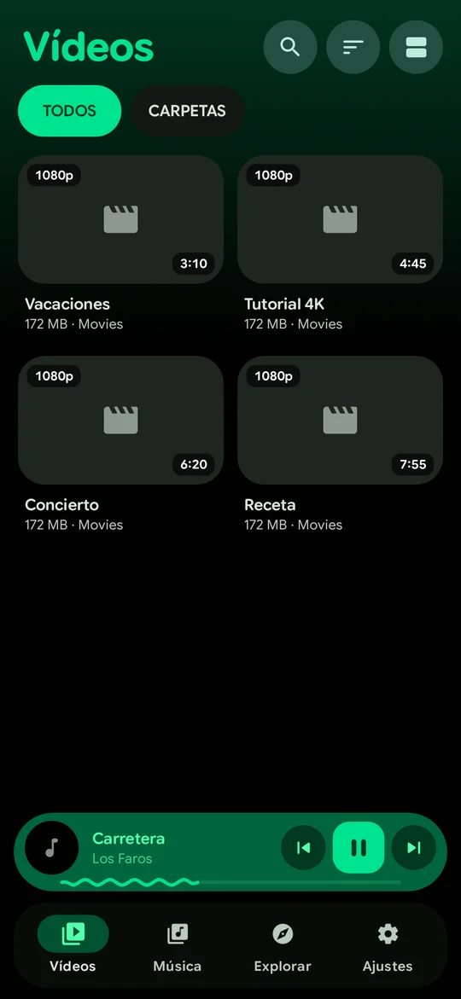
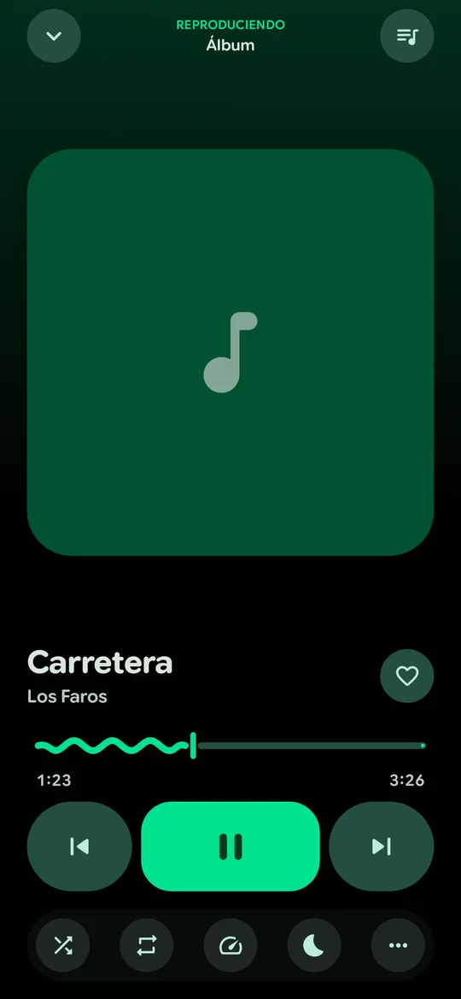
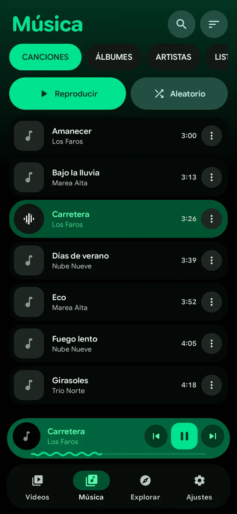
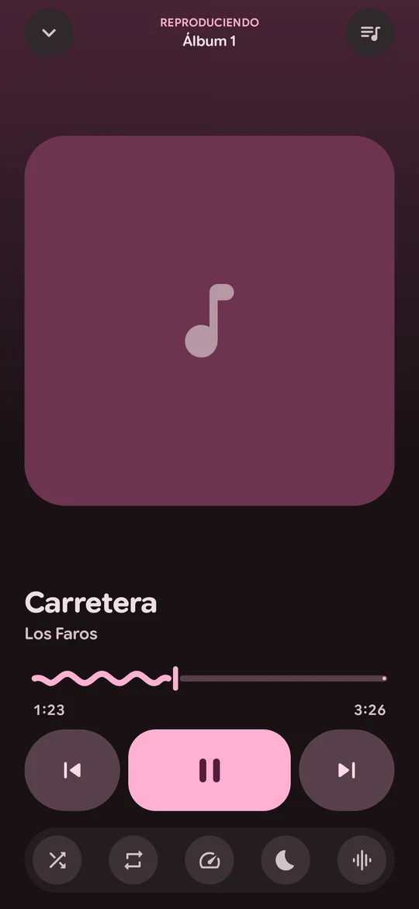

Now on Windows
Your PC, Mac style.
The same engine and the same soul, in a clean window with traffic lights. Custom installer, drag and drop, keyboard shortcuts and automatic updates.


A video and music player with the power of VLC and the soul of Material You. Every format, YouTube and a thousand more sites, on Android and Windows.



The VLC engine inside
libVLC decodes practically everything: 4K HDR, subtitles of every kind, multiple audio tracks, network streams and discs on your NAS.
Your library
Videos with resume, folders, music by albums and artists. Smooth, springy and always fast.
Music
Wavy progress bar, buttons that morph, crossfade between songs and synced lyrics you can translate.
Now playing
The player takes the colors from the album art, and so do the notification and the lock screen.

Internet
Share from YouTube or the browser to play it right away, or download the video or the MP3.
Expressive animations everywhere: the progress bar waves while it plays and the play button changes shape.
And much more
Thanks to yt-dlp, which updates itself every day. Up to 4K, with separate audio, and downloads to your phone or PC.
Automatically skips sponsors, intros and reminders on YouTube.
Recognizes the music playing in your videos and saves it for later.
“Zero, next song”. An offline voice assistant that understands six languages.
Chromecast and compatible speakers, straight from the player.
Skip the intro, the credits and the silences. Next episode with a countdown.
Equalizer with presets, audio sync, spectrum analyzer and maximum quality decoding.
Brightness, volume, seek, pinch to zoom and picture‑in‑picture.
Takes your wallpaper colors. Light, dark and pure black for AMOLED.
New versions download and install from the app itself, with no store.
Now on Windows
The same engine and the same soul, in a clean window with traffic lights. Custom installer, drag and drop, keyboard shortcuts and automatic updates.
Free, no ads, no accounts. Version 1.1.4.
Windows 10 and 11 (64‑bit). Installs without admin rights and updates itself.
Download for Windows32‑bit version for phones from before 2017. If you're not sure, choose the first one.
Download APK (32‑bit)